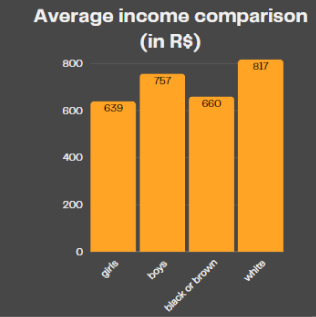

Accident
In 2022, there were 756 thousand children and adolescents carrying out the worst forms of child labor, which involved the risk of accidents or were harmful to health and are described in the TIP List.


In Brazil
In 2022, Brazil had 1.9 million children and teenagers aged 5 to 17 years of age (or 4.9% of this group age) in a situation of child labor.

Occurrence of child labor and HDI
It is possible to associate the occurrence of child labor with the Human Development Index (HDI) of each region of Brazil, as the HDI reflects indicators such as income, education and health, which are directly linked to the socioeconomic conditions that favor child labor.